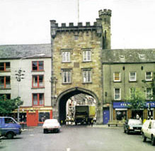

Sport in Clonmel
Sport in Clonmel

Although Tipperary would be perceived as a top GAA county,
and Clonmel a Gaelic Football and Soccer town, there is however many
other Sports been played in the Town. Clonmel Golf club formed in 1911
has a terrific course. The Slivenamon Golf club formed a little over two
years ago goes from strength to strength. Athletics will of course be
always associated with Clonmel because of double Olympic champion
Dr Pat O'Callaghan. Clonmel Athletics club is now in existence for many
years and they have had much success at local and National Level. John
Fitzgerald ran in the European Athletics Final in 1993 in the Marathon event.
Hillview Tennis and pitch and putt club, is one of the most popular clubs in
the town. The pitch and putt course is one of the top courses in the country.
Players like Noel Joyce and James Cleary are amongst the top players in Ireland.
This is a game that can be enjoyed by both young and old. Tennis has always been
as popular sport within the town. Hillview once again boasts six top all weather
Tennis courts, that can all played on under lights. There are also facilities
indoors for Badminton and Table Tennis.
Clonmel Rugby club is amongst the top Junior clubs in Ireland. Once again
they too have a very professional set up with a lovely clubhouse to add to their
two fine pitches. Clonmel man Rory Moroney gained three full international caps in
the eighties for Ireland. The Clonmel Rowing club is one of the oldest and still most
popular clubs in the town. With the River suir flowing through the town, it was and
is an obvious sport that continues to grow in the town. Once again they too have had
over the years many members represent Ireland at all levels of competition.
Other Sports in Clonmel include Skittles, Fishing, Car Rallying where the
Stonethrowers Rally has now become a very popular event in the town. Also Clonmel
Skittle club is one of the oldest in the town, and they too have hosted Munster and
All Ireland Championships.
Horse- racing is of course a very popular sport. Race meetings in Powerstown Park
are always full to capacity.
The annual Coursing festival in February is still proving to be as popular as ever
with both nationals and people from overseas. Clonmel Squash club is like Hillview one
of the most popular Clubs in the town, with quite a large membership. Clonmel Boxing Club
was formed a short number of years ago, and it continues to attract a large number of members.
Clonmel Cricket Club was formed in 1990. It this short period of time it has gone on to win the
Munster Junior Cup. It is now a very successful and well respected club. Overall Clonmel has a lot
to offer the sports fanatic. No matter what your sport Clonmel will try and cater for your pefered
choice. This web-site aims to show the main sports in clonmel, which are GAA, Golf, Greyhound
Racing, Horese Racing, Soccer and Rugby.
© 2004 Sport in Clonmel.